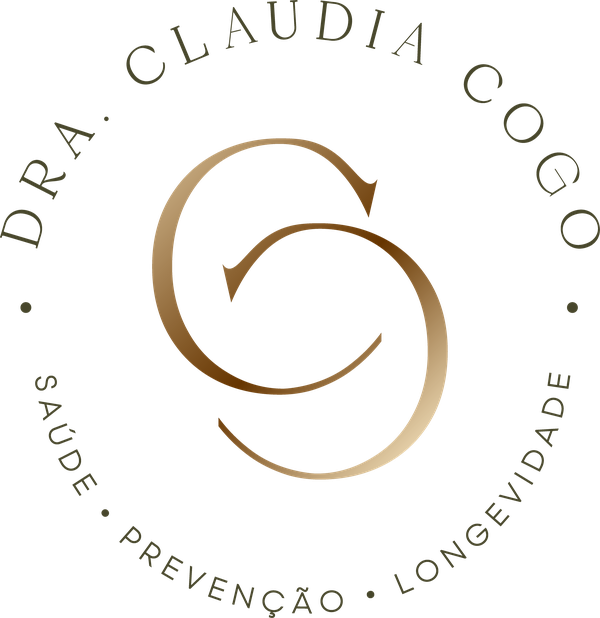

Minha mãe, como sempre conheci.
Reconquistando a independência, com metas medidas a cada 30 dias.
Cuidado médico dedicado a quem você mais ama. Em Vitória (ES), acompanhamento próximo da saúde a partir dos 50 anos, com escuta e um plano feito para cada história de vida.
A consulta
A primeira consulta dura uma hora e meia, às vezes mais. Veja o que cabe nela.
É a Avaliação Geriátrica Ampla (AGA): uma consulta feita sem pressa, que olha a pessoa inteira e termina com um plano por escrito.
Passo 1 de 5
A conversa
- A história de saúde completa, contada com calma.
- As doenças de hoje e as de antes, as internações e as cirurgias.
- O dia a dia de verdade: o que a pessoa ainda faz sozinha e o que passou a precisar de ajuda.
- Sono, apetite, humor e disposição.
- A família participa e também é ouvida.
Passo 2 de 5
Os remédios, um por um
- Todas as caixas em cima da mesa, inclusive vitaminas, naturais e os comprados sem receita.
- Para que serve cada um, quem receitou e há quanto tempo.
- O que se repete, o que soma efeito com outro e o que pode ser reduzido ou retirado com segurança.
- Nenhum remédio deve ser parado ou ajustado por conta própria: essa decisão é tomada na consulta.
Passo 3 de 5
O exame e os testes
- Exame físico completo.
- Força da mão, medida no dinamômetro.
- Velocidade do passo e teste de sentar e levantar da cadeira.
- Equilíbrio, jeito de andar e risco de queda.
- Testes de memória e de humor, com perguntas simples.
- Visão, audição, nutrição e continência, que quase nunca entram numa consulta comum.
Passo 4 de 5
A bioimpedância: o músculo, medido
- A balança comum mostra um número só. A bioimpedância separa esse número em três: músculo, gordura e água.
- Feita em pé, em poucos minutos, sem agulha e sem dor.
- Depois dos 60, é o músculo que sustenta o andar, o equilíbrio e a recuperação depois de uma internação ou cirurgia. E ele pode diminuir sem que o peso mude.
- O resultado fica registrado e é comparado a cada retorno.
Passo 5 de 5
O que você leva para casa
- Um plano de cuidado por escrito, em linguagem clara.
- O que ajustar nos remédios, e em que ordem.
- Orientação de alimentação para aquele caso.
- Orientação de exercício para aquele caso.
- Os exames que valem a pena pedir, quando houver.
- Se houver indicação de um acompanhamento mais específico, a Dra. Claudia explica. Se não houver, ela também diz.
- A combinação do retorno, que é mais curto, de uma hora.
O que trazer: todas as caixas de remédio, os exames mais recentes e, se possível, alguém da família. O atendimento é particular, com nota fiscal para quem quiser pedir reembolso ao plano. Consultório no Núcleo Summavita, Av. Cezar Hilal, 505, Bento Ferreira, Vitória.
Depois da consulta, se houver indicação, a Dra. Claudia propõe um acompanhamento. Para quem saiu do hospital ou perdeu força e autonomia existe o RECOMEÇO, uma linha de cuidado em três durações (90, 120 e 180 dias), com as mesmas medidas refeitas a cada 30 dias. A indicação é feita na consulta, por critério clínico.
Conhecer os acompanhamentos"Para que viver mais tempo signifique viver melhor."
@draclaudiacogoComo posso ajudar
Serviços em destaque
Atendimento pensado para as principais necessidades da pessoa idosa e tranquilidade para a família.
Avaliação Geriátrica Ampla
Uma consulta completa que analisa saúde física, mental, memória e rotina.
Saiba mais →Saúde da memória
Avaliação de esquecimentos, demências e Alzheimer com diagnóstico cuidadoso.
Saiba mais →Prevenção de quedas
Cuidado com equilíbrio e força para reduzir o risco de quedas e fraturas.
Saiba mais →Cirurgia, internação e recuperação
O Programa ALICERCE: antes, durante e depois da operação, em parceria com o seu cirurgião. E, depois da alta, a linha de cuidado RECOMEÇO 90, 120 e 180.
Saiba mais →Sobre a médica
Uma médica que ouve antes de tudo
Especialista em Clínica Médica (RQE 10497) e Medicina Intensiva (RQE 10498), com pós-graduação em Geriatria pelo Hospital Israelita Albert Einstein (SP), a Dra. Claudia soma 17 anos de medicina e acredita que envelhecer bem é um direito.
No consultório, cada consulta começa por uma boa conversa: entender a história, as preocupações da família e o que faz sentido para aquela pessoa. A partir daí, constrói um plano de cuidado claro e realista.
Conhecer a trajetóriaO espaço
Um consultório pensado para acolher
Ambiente discreto, confortável e elegante, para que cada consulta aconteça com calma, tempo e privacidade.
Ambiente da recepção ilustrativo, do projeto da marca.
Foco na saúde da pessoa idosa
Atendimento individual, sem pressa
Cuidado que reúne corpo, mente e rotina
Perguntas frequentes
Antes de marcar, as respostas que toda família pede
-
Quanto dura a consulta?
A primeira consulta dura uma hora e meia. Histórico completo, exame físico, revisão de cada remédio da sacola, e as cinco medidas: massa muscular por bioimpedância, força da mão, velocidade do passo, sentar e levantar, memória. A família participa. Os retornos são mais curtos.
-
Atende convênio?
Não. A consulta é particular e o consultório emite nota fiscal no mesmo dia para quem quiser pedir reembolso ao plano. Os exames pedidos podem ser feitos pelo convênio.
-
Ele não consegue sair de casa?
A Dra. Claudia faz visita domiciliar em Vitória e região, com agendamento pelo consultório.

Vamos cuidar juntos
Agende a consulta da sua família
Fale com o consultório pelo WhatsApp e encontre o melhor horário. Estamos aqui para ajudar você a cuidar de quem você ama.